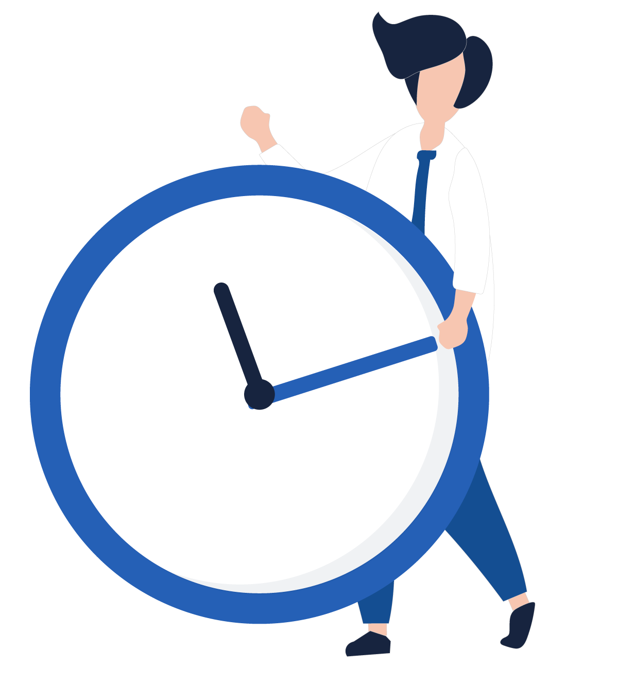

<ion-app>
  <ion-content fullscreen class="confirmacion-content">

    <div class="confirmacion-wrapper">

      <section class="logo-section">
        
        <ion-label mode="md" class="app-title">
          <b>Reloj Virtual</b>
        </ion-label>
      </section>

      <section class="success-card">

        <div class="estado-principal">
          <div class="success-icon">
            <ion-icon name="checkmark-done-outline"></ion-icon>
          </div>

          <div class="estado-texto">
            <span>Registro exitoso</span>
            <h1>Timbre enviado</h1>
          </div>
        </div>

        <div class="usuario-card">
          <ion-icon name="person-circle-outline"></ion-icon>

          <div>
            <span>Empleado</span>
            <strong>{{ nombre_usuario }} {{ apellido_usuario }}</strong>
          </div>
        </div>

        <div class="detalle-principal">

          <div class="detalle-bloque fecha-bloque">
            <div class="detalle-icono">
              <ion-icon name="calendar-outline"></ion-icon>
            </div>

            <div>
              <span>Fecha y hora de envío</span>

              <strong *ngIf="isConnected && serverConnected">
                {{ fecha }} a las {{ hora }}
              </strong>

              <strong *ngIf="!isConnected || !serverConnected">
                {{ fechaTransformada }} a las {{ horaTransformada }}
              </strong>
            </div>
          </div>

          <div class="detalle-bloque ubicacion-bloque">
            <div class="detalle-icono">
              <ion-icon name="location-outline"></ion-icon>
            </div>

            <div>
              <span>Ubicación registrada</span>

              <strong *ngIf="ubicacion != null && ubicacion != undefined">
                {{ ubicacion }}
              </strong>

              <strong *ngIf="ubicacion == null || ubicacion == undefined">
                Sin ubicación
              </strong>
            </div>
          </div>

        </div>

        <div class="decoracion-img">
          
        </div>

        <ion-button
          expand="block"
          shape="round"
          class="btn-inicio"
          (click)="irABienvenido()">

          <ion-icon name="home-outline" slot="start"></ion-icon>
          Ir a inicio

        </ion-button>

      </section>

    </div>

  </ion-content>
</ion-app>